pacman::p_load(lubridate, tidyverse, tsibble, feasts, fable, seasonal)In Class Exercise 07: Visualising, Analysing and Forecasting Time-series Data with tidyverts methods
Overview
tidyverts is family of R packages specially designed for visualising, analysing and forecasting time-series data conforming to tidyverse framework. Created by Dr. Rob Hyndman from Monash University, it is intended to be the replacement for the extant forecast package.
An online companion textbook Forecasting: Principles and Practice, 3rd Edition(Hyndman and Athanasopoulos) is provided.
In this exercise, we will:
- import and wrangle with time-series data by using appropriate tidyverse methods,
- visualise and analyse time-series data,
- calibrate time-series forecasting models by using exponential smoothing and ARIMA techniques, and
- compare and evaluate the performance of forecasting models.
Loading Data
We will be using the following packages:
- lubridate, part of tidyverse, provides a collection to functions to parse and wrangle time and date data;
- tidyverse, a family of R packages for data science processes;
- tsibble provides a data infrastructure for tidy temporal data with wrangling tools. Adapting the tidy data principles, tsibble is a data- and model-oriented object;
- feasts provides a collection of tools for the analysis of time series data. The package name is an acronym comprising of its key features: Feature Extraction And Statistics for Time Series;
- fable provides a collection of commonly used univariate and multivariate time series forecasting models including exponential smoothing via state space models and automatic ARIMA modelling
The latter three packages belong to tidyverts, a family of tidy tools for time series data handling, analysis and forecasting.
We will be using visitor_arrivals_by_air.csv, which is a cleaned dataset consisting of monthly data where each column is a country containing the number of arrivals from that country in that particular month.
ts_data <- read_csv(
"data/visitor_arrivals_by_air.csv")Preprocessing
We see that the Month-Year is a Character field, which is not convenient when analysing time-series data. We use dmy() of lubridate package is used to convert data type of Month-Year field from Character to Date.
ts_data$`Month-Year` <- dmy(
ts_data$`Month-Year`)We can also see that ts_data is a tibble data.frame.
class(ts_data)[1] "spec_tbl_df" "tbl_df" "tbl" "data.frame" We could convert the data.frame into a base R time series object.
ts_data_ts <- ts(ts_data)
class(ts_data_ts)[1] "mts" "ts" "matrix" "array" However, built on top of the tibble, a tsibble (or tbl_ts) is a data- and model-oriented object. Compared to the conventional time series objects in R, e.g. ts, zoo, xts, a tsibble preserves time indices as the essential data column and makes heterogeneous data structures possible. Beyond the tibble-like representation, keys comprised of single or multiple variables is introduced to uniquely identify observational units over time (index).
As a tsibble object is more convenient for dealing with time-series data, so we convert it using the as_tsibble() function from the tsibble package.
ts_tsibble <- ts_data %>%
mutate(Month = yearmonth(`Month-Year`)) %>%
as_tsibble(index = `Month`)
ts_tsibble# A tsibble: 144 x 35 [1M]
`Month-Year` `Republic of South Africa` Canada USA Bangladesh Brunei China
<date> <dbl> <dbl> <dbl> <dbl> <dbl> <dbl>
1 2008-01-01 3680 6972 31155 6786 3729 79599
2 2008-02-01 1662 6056 27738 6314 3070 82074
3 2008-03-01 3394 6220 31349 7502 4805 72546
4 2008-04-01 3337 4764 26376 7333 3096 76112
5 2008-05-01 2089 4460 26788 7988 3586 64808
6 2008-06-01 2515 3888 29725 8301 5284 55238
7 2008-07-01 2919 5313 33183 9004 4070 80747
8 2008-08-01 2471 4519 27427 7913 4183 66625
9 2008-09-01 2492 3421 21588 7549 3160 52649
10 2008-10-01 3023 4756 25112 7527 2983 54423
# ℹ 134 more rows
# ℹ 28 more variables: `Hong Kong SAR (China)` <dbl>, India <dbl>,
# Indonesia <dbl>, Japan <dbl>, `South Korea` <dbl>, Kuwait <dbl>,
# Malaysia <dbl>, Myanmar <dbl>, Pakistan <dbl>, Philippines <dbl>,
# `Saudi Arabia` <dbl>, `Sri Lanka` <dbl>, Taiwan <dbl>, Thailand <dbl>,
# `United Arab Emirates` <dbl>, Vietnam <dbl>, `Belgium & Luxembourg` <dbl>,
# Finland <dbl>, France <dbl>, Germany <dbl>, Italy <dbl>, …What we can learn from the code chunk above
mutate()of dplyr package is used to derive a new field by transforming the data values in Month-Year field into month-year format.- The transformation is performed by using yearmonth() of tsibble package. - as_tsibble() is used to convert the tibble data.frame into a tsibble.
Visualising the Time-series Data
In order to visualise the time-series data effectively, we need to organise the data frame from wide to long format by using pivot_longer() of tidyr package as shown below.
ts_longer <- ts_data %>%
pivot_longer(cols = c(2:34),
names_to = "Country",
values_to = "Arrivals")Visualising single time-series: ggplot2 methods
ts_longer %>%
filter(Country == "Vietnam") %>%
ggplot(aes(x = `Month-Year`,
y = Arrivals))+
geom_line(size = 0.5)
What we can learn from the code chunk above
- filter() of dplyr package is used to select records belong to Vietnam.
- geom_line() of ggplot2 package is used to plot the time-series line graph.
Plotting multiple time-series data with ggplot2 methods
ggplot(data = ts_longer,
aes(x = `Month-Year`,
y = Arrivals,
color = Country))+
geom_line(size = 0.5) +
theme(legend.position = "bottom",
legend.box.spacing = unit(0.5, "cm"))
We can see having multiple countries’ data in the same plot as above is very messy and difficult to distinguish. In order to provide an effective comparison, facet_wrap() of ggplot2 package is used instead to create small multiple line graphs a.k.a. trellis plot.
ggplot(data = ts_longer,
aes(x = `Month-Year`,
y = Arrivals))+
geom_line(size = 0.5) +
facet_wrap(~ Country,
ncol = 3,
scales = "free_y") +
theme_bw()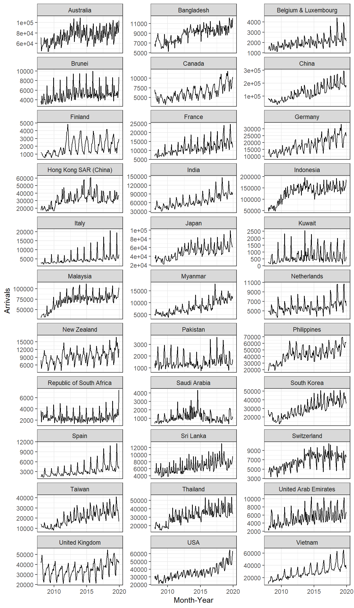
What we can learn from the code chunk above
scales="free_y"argument allows the y-axis values of each countries’ subplot to be independent of each other to be able to see the absolute values clearly, instead of viewing relative graphs on a fixed axis value.
Visual Analysis of Seasonality in Time-series Data
Time series data can contain a seasonal component, which is a cycle that repeats over time, such as monthly or yearly. This repeating cycle is something that we wish to incorporate into the model when fitting it, and provides a strong signal to our predictive forecasts.
As above, we organise the tsibble into a long format from wide format.
tsibble_longer <- ts_tsibble %>%
pivot_longer(cols = c(2:34),
names_to = "Country",
values_to = "Arrivals")Visual Analysis of Seasonality with Seasonal Plot
A seasonal plot is similar to a time plot except that the data are plotted against the individual seasons in which the data were observed, split by year.
We use gg_season() of feasts package.
tsibble_longer %>%
filter(Country == "Italy" |
Country == "Vietnam" |
Country == "United Kingdom" |
Country == "Germany") %>%
gg_season(Arrivals)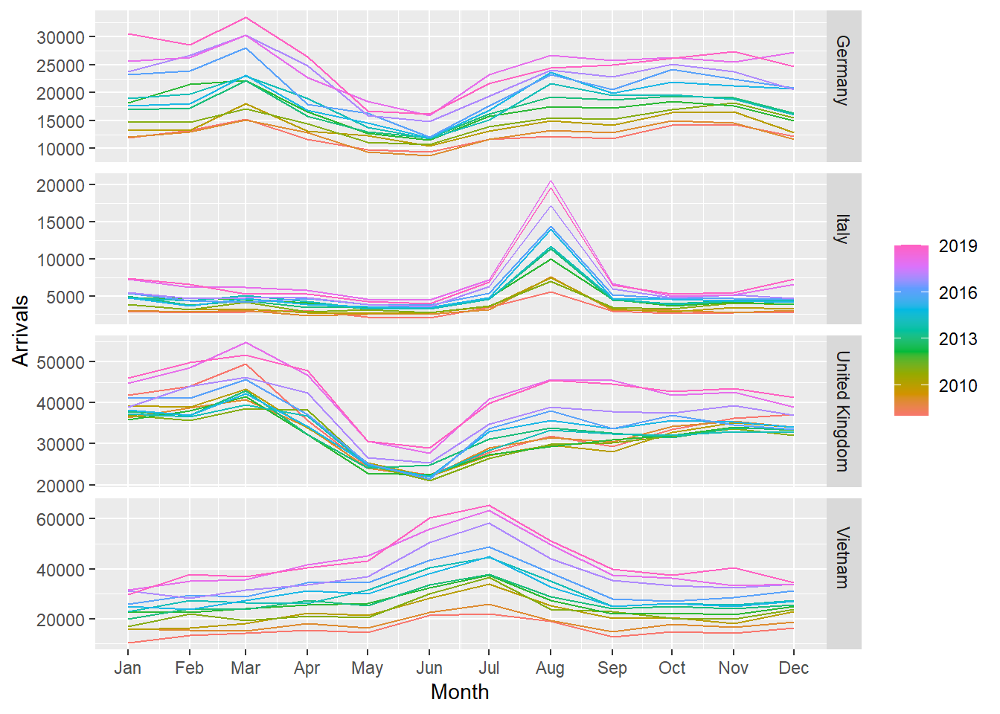
Visual Analysis of Seasonality with Cycle Plot
A cycle plot shows how a trend or cycle changes over time, and we can use them to see seasonal patterns. Typically, a cycle plot shows a measure on the Y-axis and then shows a time period (such as months or seasons) along the X-axis. For each time period, there is a trend line across a number of years.
Here, we plot two time-series lines of visitor arrivals from Vietnam and Italy. Both lines reveal clear signs of seasonal patterns but not the trend.
tsibble_longer %>%
filter(Country == "Vietnam" |
Country == "Italy") %>%
autoplot(Arrivals) +
facet_grid(Country ~ ., scales = "free_y")
Now, we can plot cycle plots using gg_subseries() of feasts package. The cycle plots show not only seasonal patterns but also the trend.
tsibble_longer %>%
filter(Country == "Vietnam" |
Country == "Italy") %>%
gg_subseries(Arrivals)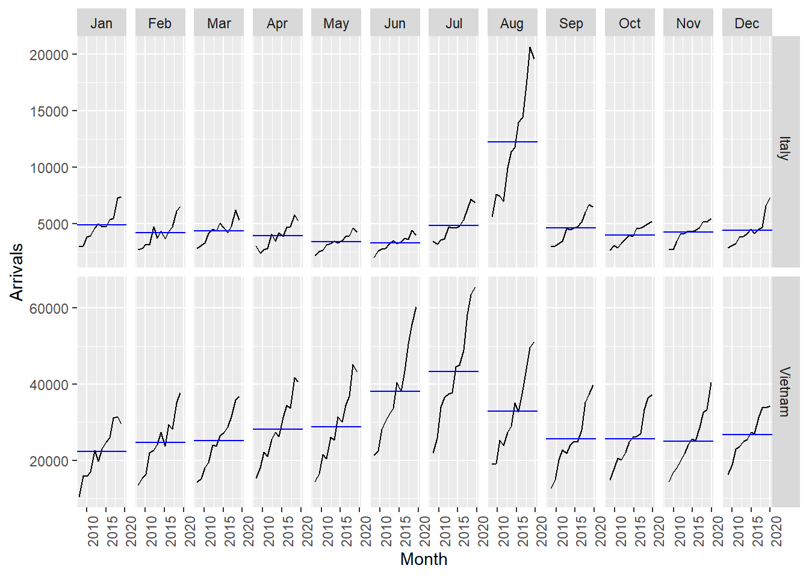
What we can learn from the code chunk above
gg_subseries" provides a simple function to plot a cycle plot, as opposed to having to manually do the plot combininggeom_line(),geom_hline()in afacet_grid()`.
We can see the data paints a more detailed picture of seasonality: Italians will suddenly surge in numbers of arrivals in the month of August, while the Vietnamese have more obvious shoulder season with a gradual progression towards their peak in July before coming back down.
Time-series Decomposition
Time series decomposition allows us to isolate structural components from models such as ARIMA. the autoregressive (AR), integrative (I), and moving average (MA) components with seasonality can be extracted from the time-series data.
Single time series decomposition
In feasts package, time series decomposition is supported by the functions ACF(), PACF(), CCF(), feat_acf(), and feat_pacf().
The output can then be plotted by using autoplot() of feasts package.
Here, we plot the auto-correlation function of visitor arrivals from Vietnam.
tsibble_longer %>%
filter(`Country` == "Vietnam") %>%
ACF(Arrivals) %>%
autoplot()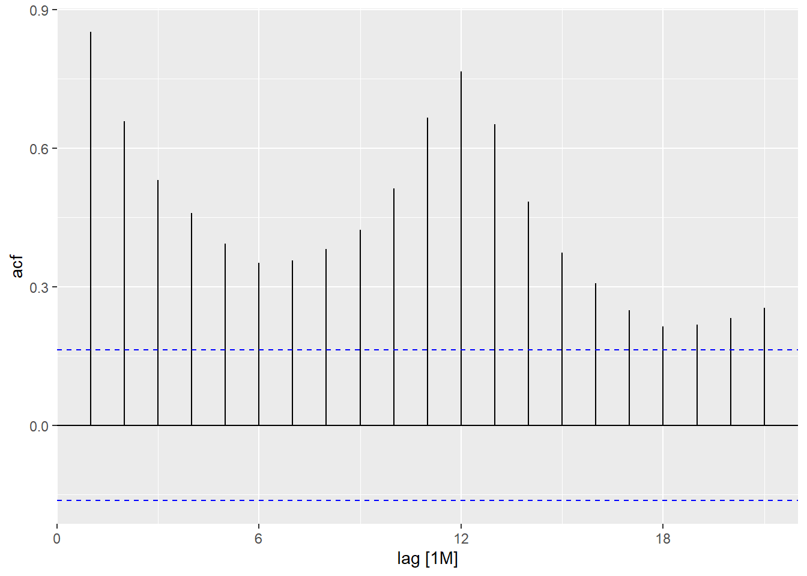
Here, we plot the partial auto-correlation function of visitor arrivals from Vietnam. It differs from the ACF in that it only accounts for correlation of time t with time t-k without considering indirect infuences from between those two time periods.
tsibble_longer %>%
filter(`Country` == "Vietnam") %>%
PACF(Arrivals) %>%
autoplot()
Multiple time-series decomposition
We build a trellis plot of ACFs for visitor arrivals from Vietnam, Italy, United Kingdom and China.
tsibble_longer %>%
filter(`Country` == "Vietnam" |
`Country` == "Italy" |
`Country` == "United Kingdom" |
`Country` == "China") %>%
ACF(Arrivals) %>%
autoplot()
We can clearly see that:
- Italy arrivals have a clear seasonality with a 12 month lag
- China arrivals show a clear seasonality with 6 month lags, with a positive trend as the ACF is always significant
- Vietnam arrivals show a clear seasonality with 12 month lags, with a positive trend as the ACF is always significant
We now build a trellis plot of PACFs for visitor arrivals from Vietnam, Italy, United Kingdom and China.
tsibble_longer %>%
filter(`Country` == "Vietnam" |
`Country` == "Italy" |
`Country` == "United Kingdom" |
`Country` == "China") %>%
PACF(Arrivals) %>%
autoplot()
We note that the PACF for UK and Vietnam arrivals are negative for lag t-2 which are significant. This indicates that the number of arrivals two months ago has a direct negative effect on the current arrivals, meaning that higher arrivals two months prior are associated with lower arrivals in the present month, and vice versa.
Composite plot of time series decomposition
One interesting function of feasts package is gg_tsdisplay(). It provides a composite plot by showing the original line graph on the top pane follow by the ACF on the left and seasonal plot on the right.
tsibble_longer %>%
filter(`Country` == "Vietnam") %>%
gg_tsdisplay(Arrivals)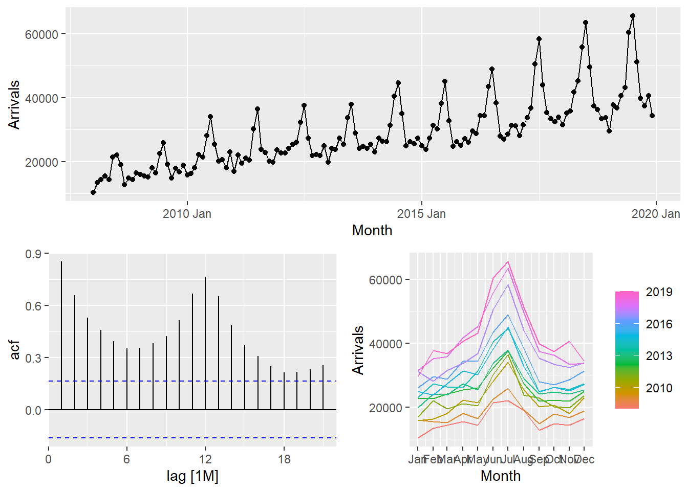
Visual STL Diagnostics
STL is an acronym for “Seasonal and Trend decomposition using Loess”, where Loess is a method for estimating nonlinear relationships. It was developed by R. B. Cleveland, Cleveland, McRae, & Terpenning (1990), as a robust method of time series decomposition often used in economic and environmental analyses.
The STL method uses locally fitted regression models to decompose a time series into trend, seasonal, and remainder components by performing smoothing on the time series using LOESS in two loops:
- The inner loop iterates between seasonal and trend smoothing
- The outer loop minimizes the effect of outliers
During the inner loop, the seasonal component is calculated first and removed to calculate the trend component. The remainder is calculated by subtracting the seasonal and trend components from the time series.
The benefits of using STL are:
- STL will handle any type of seasonality, not only monthly and quarterly data.
- The seasonal component is allowed to change over time, and the rate of change can be controlled by the user.
- The smoothness of the trend-cycle can also be controlled by the user.
- It can be robust to outliers (i.e., the user can specify a robust decomposition), so that occasional unusual observations will not affect the estimates of the trend-cycle and seasonal components. They will, however, affect the remainder component.
tsibble_longer %>%
filter(`Country` == "Vietnam") %>%
model(stl = STL(Arrivals)) %>%
components() %>%
autoplot()
The grey bars to the left of each panel show the relative scales of the components. Each grey bar represents the same length but because the plots are on different scales, the bars vary in size. The large grey bar in the bottom panel shows that the variation in the remainder component is smallest compared to the variation in the data. If we shrank the bottom three panels until their bars became the same size as that in the data panel, then all the panels would be on the same scale.
From the above, as trend is an increasing linear line, season_year looks like a series with cycles, and the remainder (residual) looks like white noise, we conclude that ARIMA models would be a good fit for the data.
Classical Decomposition with feasts
Here, we use classical_decomposition() of feasts package to decompose a time series into seasonal, trend and irregular components using moving averages. THe function is able to deal with both additive or multiplicative seasonal components.
tsibble_longer %>%
filter(`Country` == "Vietnam") %>%
model(
classical_decomposition(
Arrivals, type = "additive")) %>%
components() %>%
autoplot()
Visual Forecasting
In this section, we will use two R packages belonging to tidyverts family:
- fable provides a collection of commonly used univariate and multivariate time series forecasting models including exponential smoothing via state space models and automatic ARIMA modelling. It is a tidy version of the popular forecast package and a member of tidyverts
- fabletools provides tools for building modelling packages, with a focus on time series forecasting. This package allows package developers to extend fable with additional models, without needing to depend on the models supported by fable.
Time Series Data Wrangling
A good practice in forecasting is to split the original data set into a training and a hold-out data sets. The first part is called the estimate sample (also known as training data). It will be used to estimate the starting values and the smoothing parameters. This sample typically contains 75-80 percent of the observation, although the forecaster may choose to use a smaller percentage for longer series.
The second part of the time series is called the hold-out sample. It is used to check the forecasting performance. No matter how many parameters are estimated with the estimation sample, each method under consideration can be evaluated with the use of the “new” observation contained in the hold-out sample.
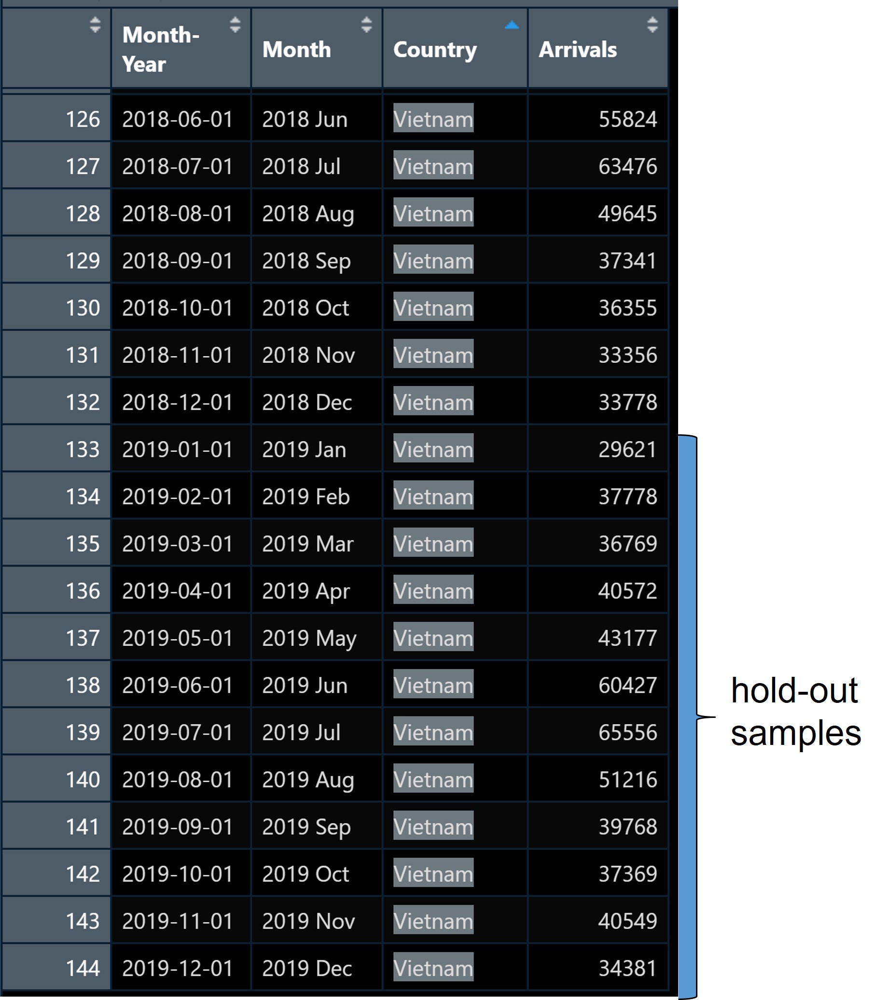
In this example we will use the last 12 months for hold-out and the rest for training.
First, an extra column called Type indicating “training” or “hold-out” will be created by using mutate() of dplyr package, to be used later.
vietnam_ts <- tsibble_longer %>%
filter(Country == "Vietnam") %>%
mutate(Type = if_else(
`Month-Year` >= "2019-01-01",
"Hold-out", "Training"))Then, the training data set is extracted from the original data set by using filter() of dplyr package.
vietnam_train <- vietnam_ts %>%
filter(`Month-Year` < "2019-01-01")EDA: Time Series Data
We do the EDA as part of the process
vietnam_train %>%
model(stl = STL(Arrivals)) %>%
components() %>%
autoplot()
Fitting forecasting models
Fitting Exponential Smoothing State Space (ETS) Models: fable methods
ETS(y ~ error(c("A", "M"))
+ trend(c("N", "A", "Ad"))
+ season(c("N", "A", "M")))<ETS model definition>Fitting a simple exponential smoothing (SES) model
fit_ses <- vietnam_train %>%
model(ETS(Arrivals ~ error("A")
+ trend("N")
+ season("N")))
fit_ses# A mable: 1 x 2
# Key: Country [1]
Country `ETS(Arrivals ~ error("A") + trend("N") + season("N"))`
<chr> <model>
1 Vietnam <ETS(A,N,N)>Notice that model() of fable package is used to estimate the ETS model on a particular dataset, and returns a mable (model table) object.
A mable contains a row for each time series (uniquely identified by the key variables), and a column for each model specification. A model is contained within the cells of each model column.
Examine Model Assumptions
Next, we use gg_tsresiduals() of feasts package to check the model assumptions with residuals plots.
gg_tsresiduals(fit_ses)
Model Details
report() of fabletools is be used to reveal the model details.
fit_ses %>%
report()Series: Arrivals
Model: ETS(A,N,N)
Smoothing parameters:
alpha = 0.9998995
Initial states:
l[0]
10312.99
sigma^2: 27939164
AIC AICc BIC
2911.726 2911.913 2920.374 Fitting ETS Methods with Trend: Holt’s Linear Trend methods
vietnam_H <- vietnam_train %>%
model(`Holt's method` =
ETS(Arrivals ~ error("A") +
trend("A") +
season("N")))
vietnam_H %>% report()Series: Arrivals
Model: ETS(A,A,N)
Smoothing parameters:
alpha = 0.9998995
beta = 0.0001004625
Initial states:
l[0] b[0]
13673.29 525.8859
sigma^2: 28584805
AIC AICc BIC
2916.695 2917.171 2931.109 Fitting ETS Methods with Trend: Damped Trend methods
vietnam_HAd <- vietnam_train %>%
model(`Holt's method` =
ETS(Arrivals ~ error("A") +
trend("Ad") +
season("N")))
vietnam_HAd %>% report()Series: Arrivals
Model: ETS(A,Ad,N)
Smoothing parameters:
alpha = 0.9998999
beta = 0.0001098602
phi = 0.9784562
Initial states:
l[0] b[0]
13257.28 523.54
sigma^2: 28641536
AIC AICc BIC
2917.921 2918.593 2935.218 Checking Results
gg_tsresiduals(vietnam_H)
gg_tsresiduals(vietnam_HAd)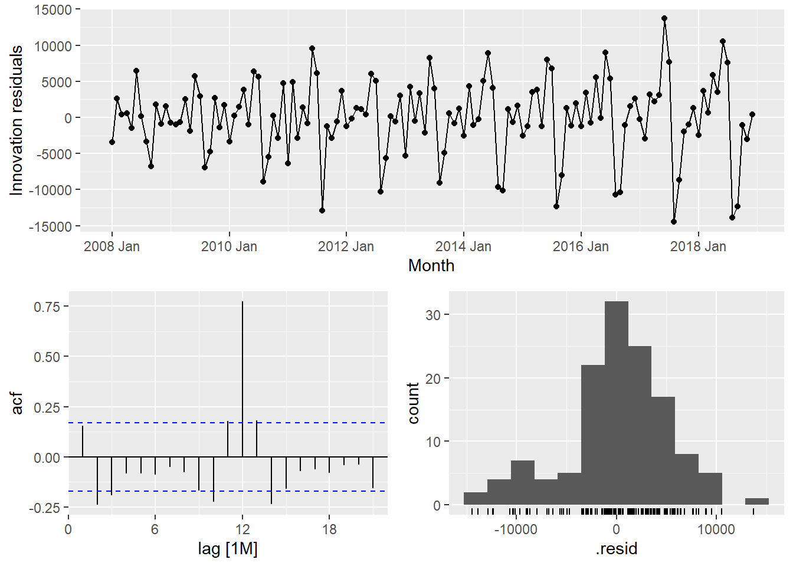
Fitting ETS Methods with Season: Holt-Winters
Vietnam_WH <- vietnam_train %>%
model(
Additive = ETS(Arrivals ~ error("A")
+ trend("A")
+ season("A")),
Multiplicative = ETS(Arrivals ~ error("M")
+ trend("A")
+ season("M"))
)
Vietnam_WH %>% report()# A tibble: 2 × 10
Country .model sigma2 log_lik AIC AICc BIC MSE AMSE MAE
<chr> <chr> <dbl> <dbl> <dbl> <dbl> <dbl> <dbl> <dbl> <dbl>
1 Vietnam Additive 5.33e+6 -1336. 2706. 2711. 2755. 4.68e6 8.56e6 1.72e+3
2 Vietnam Multiplicative 4.55e-3 -1300. 2635. 2640. 2684. 3.05e6 3.42e6 5.20e-2Fitting multiple ETS Models
fit_ETS <- vietnam_train %>%
model(`SES` = ETS(Arrivals ~ error("A") +
trend("N") +
season("N")),
`Holt`= ETS(Arrivals ~ error("A") +
trend("A") +
season("N")),
`damped Holt` =
ETS(Arrivals ~ error("A") +
trend("Ad") +
season("N")),
`WH_A` = ETS(
Arrivals ~ error("A") +
trend("A") +
season("A")),
`WH_M` = ETS(Arrivals ~ error("M")
+ trend("A")
+ season("M"))
)The model coefficient
tidy() of fabletools is be used to extract model coefficients from a mable.
fit_ETS %>%
tidy()# A tibble: 45 × 4
Country .model term estimate
<chr> <chr> <chr> <dbl>
1 Vietnam SES alpha 1.00
2 Vietnam SES l[0] 10313.
3 Vietnam Holt alpha 1.00
4 Vietnam Holt beta 0.000100
5 Vietnam Holt l[0] 13673.
6 Vietnam Holt b[0] 526.
7 Vietnam damped Holt alpha 1.00
8 Vietnam damped Holt beta 0.000110
9 Vietnam damped Holt phi 0.978
10 Vietnam damped Holt l[0] 13257.
# ℹ 35 more rowsModel Comparison
We use report() of fabletool
fit_ETS %>%
report()# A tibble: 5 × 10
Country .model sigma2 log_lik AIC AICc BIC MSE AMSE MAE
<chr> <chr> <dbl> <dbl> <dbl> <dbl> <dbl> <dbl> <dbl> <dbl>
1 Vietnam SES 2.79e+7 -1453. 2912. 2912. 2920. 27515844. 5.99e7 3.91e+3
2 Vietnam Holt 2.86e+7 -1453. 2917. 2917. 2931. 27718599. 6.03e7 3.92e+3
3 Vietnam damped Holt 2.86e+7 -1453. 2918. 2919. 2935. 27556629. 5.97e7 3.92e+3
4 Vietnam WH_A 5.33e+6 -1336. 2706. 2711. 2755. 4684271. 8.56e6 1.72e+3
5 Vietnam WH_M 4.55e-3 -1300. 2635. 2640. 2684. 3046059. 3.42e6 5.20e-2Forecasting future values
We use forecast() of fable to forecast ahead by 12 months.
fit_ETS %>%
forecast(h = "12 months") %>%
autoplot(vietnam_ts,
level = NULL)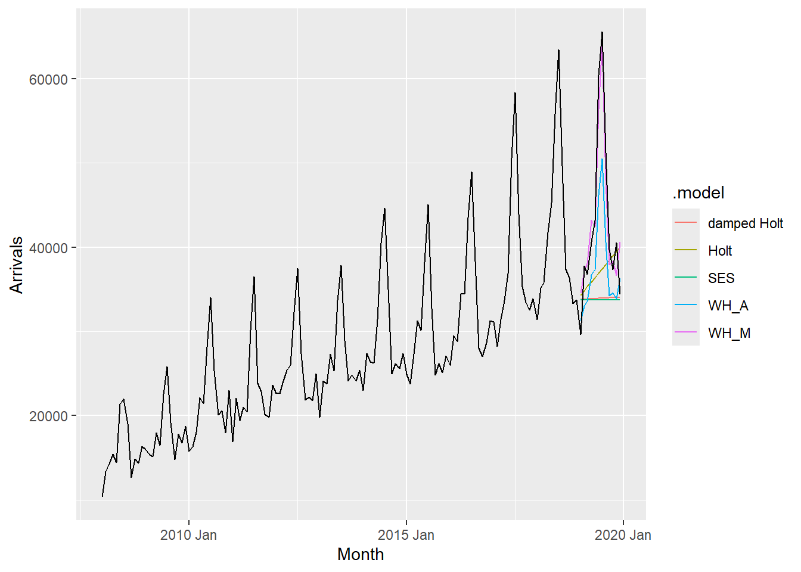
This forms a visual complement to the report() function above.
Fitting ETS Automatically
fit_autoETS <- vietnam_train %>%
model(ETS(Arrivals))
fit_autoETS %>% report()Series: Arrivals
Model: ETS(M,A,M)
Smoothing parameters:
alpha = 0.1613503
beta = 0.0001021811
gamma = 0.0001030996
Initial states:
l[0] b[0] s[0] s[-1] s[-2] s[-3] s[-4] s[-5]
15001.12 212.3552 0.9167302 0.8311728 0.8739287 0.8690543 1.104668 1.485584
s[-6] s[-7] s[-8] s[-9] s[-10] s[-11]
1.311207 0.9917759 1.014187 0.8973028 0.8816768 0.8227129
sigma^2: 0.0046
AIC AICc BIC
2634.751 2640.119 2683.759 Check model assumptions
gg_tsresiduals(fit_autoETS)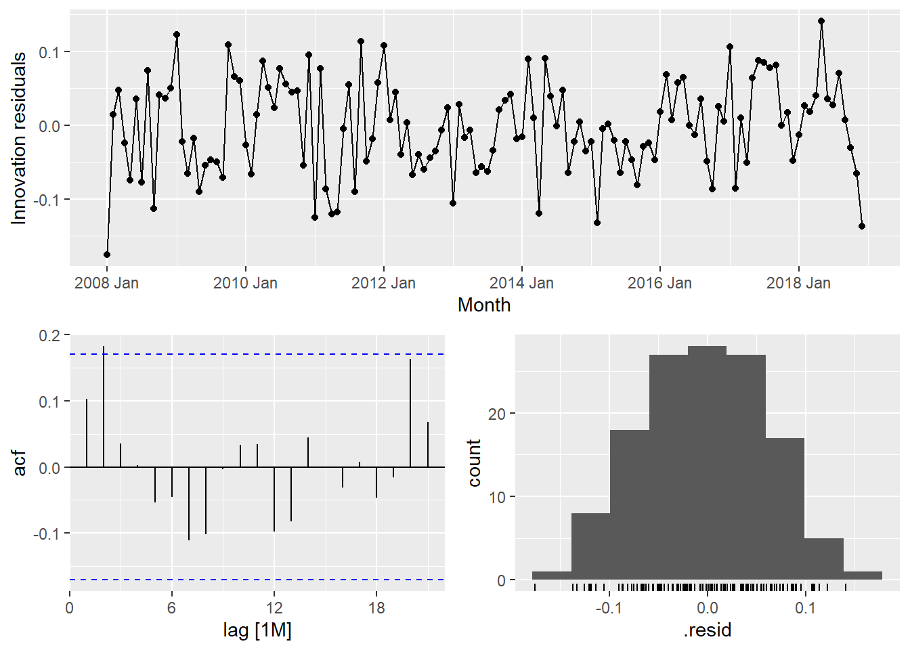
We expect the residuals to be a white noise process. From the ACF graph, we can see that one value appears to just be significant. This is normal as it level of significance is 5% i.e. out of the 21 lags we observe, we can expect 1 to be on the side of significant.
The normally distributed nature of the residuals confirms that the model is right.
Forecast future values
forecast() of fable package is used to forecast future values. Then, autoplot() of feasts package is used to see the training data along with the forecast values.
fit_autoETS %>%
forecast(h = "12 months") %>%
autoplot(vietnam_train)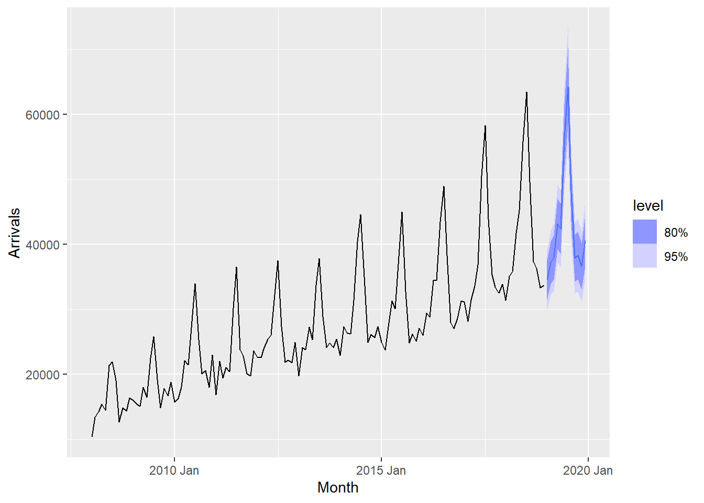
It is quite difficult to see the overlapping uncertainty levels, so only plot data from 2017 onwards by filtering the dates.
vietnam_train_zoom <- vietnam_train %>%
filter(Month >= as.Date("2017-01-01"))
fit_autoETS %>%
forecast(h = "12 months") %>%
autoplot(vietnam_train_zoom)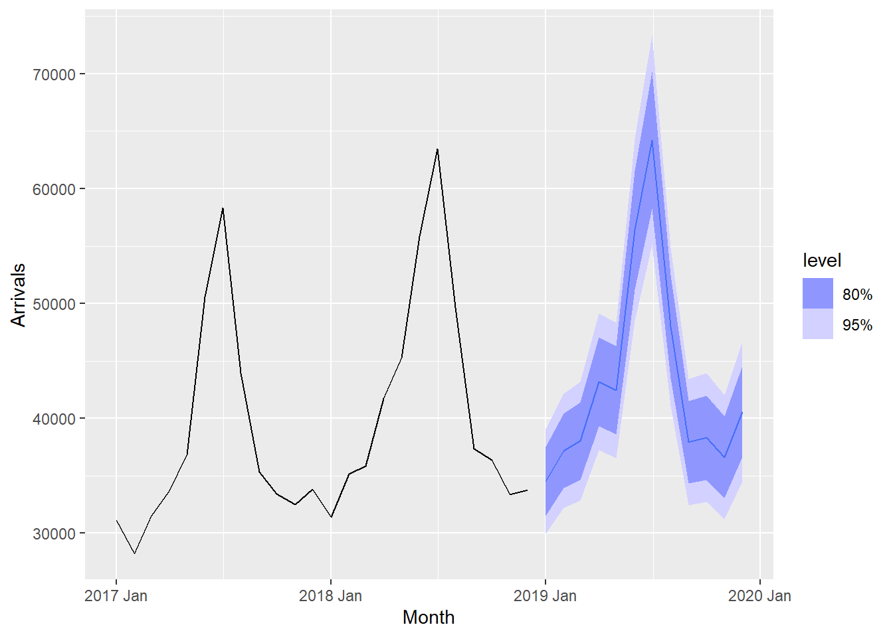
Visualising AutoETS model with ggplot2
We are interested to understand the relationship between training data, fitted regression, and forecasted values versus the hold-out data, so we plot it all.
fc_autoETS <- fit_autoETS %>%
forecast(h = "12 months")
vietnam_ts %>%
ggplot(aes(x=`Month`,
y=Arrivals)) +
autolayer(fc_autoETS,
alpha = 0.6) +
geom_line(aes(
color = Type),
alpha = 0.8) +
geom_line(aes(
y = .mean,
colour = "Forecast"),
data = fc_autoETS) +
geom_line(aes(
y = .fitted,
colour = "Fitted"),
data = augment(fit_autoETS))
We have the same issue as before, with difficulty viewing the uncertainty levels, so again we filter the dates to zoom in.
vietnam_ts_zoom <- vietnam_ts %>%
filter(Month >= as.Date("2017-01-01"))
fc_autoETS <- fit_autoETS %>%
forecast(h = "12 months")
fitted_values_zoom <- augment(fit_autoETS) %>%
filter(Month >= as.Date("2017-01-01"))
vietnam_ts_zoom %>%
ggplot(aes(x=`Month`,
y=Arrivals)) +
autolayer(fc_autoETS,
alpha = 0.6) +
geom_line(aes(
color = Type),
alpha = 0.8) +
geom_line(aes(
y = .mean,
colour = "Forecast"),
data = fc_autoETS) +
geom_line(aes(
y = .fitted,
colour = "Fitted"),
data = fitted_values_zoom)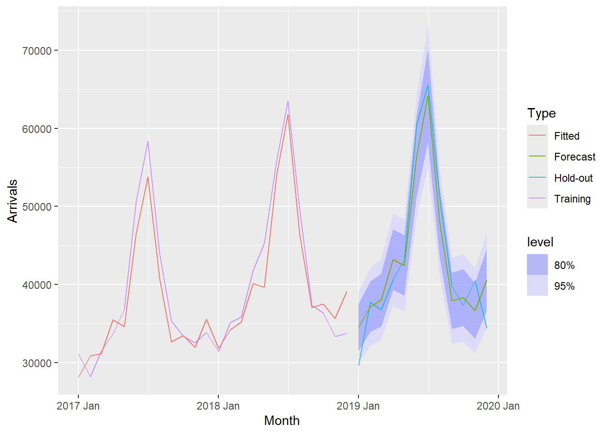
AutoRegressive Integrated Moving Average(ARIMA) Methods for Time Series Forecasting: tidyverts’ fable methods
Visualising Autocorrelations: feasts methods
[feasts] package provides a very handy function for visualising the ACF and PACF of a time series called gg_tsdisplay().
vietnam_train %>%
gg_tsdisplay(plot_type='partial')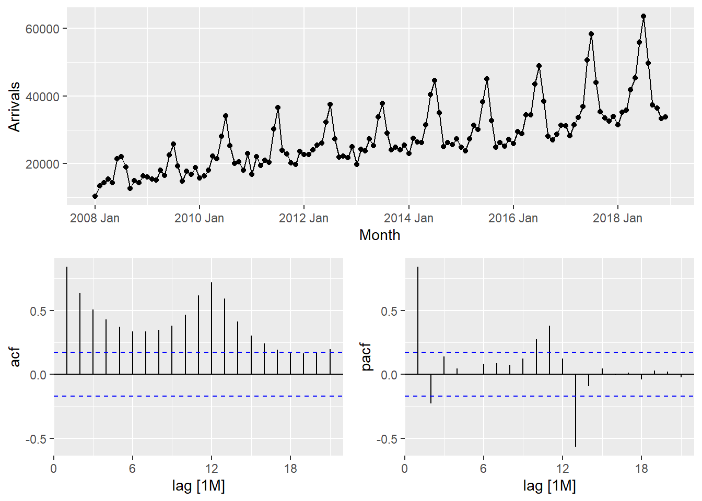
We can analyse the ACF to a greater depth.
tsibble_longer %>%
filter(`Country` == "Vietnam") %>%
ACF(Arrivals) %>%
autoplot()
Or for a different country.
tsibble_longer %>%
filter(`Country` == "United Kingdom") %>%
ACF(Arrivals) %>%
autoplot()
By comparing both ACF plots, it is clear that visitor arrivals from United Kingdom were very seasonal and lacking in trend as compared to visitor arrivals from Vietnam.
Differencing: fable methods
Trend differencing
tsibble_longer %>%
filter(Country == "Vietnam") %>%
gg_tsdisplay(difference(
Arrivals,
lag = 1),
plot_type='partial')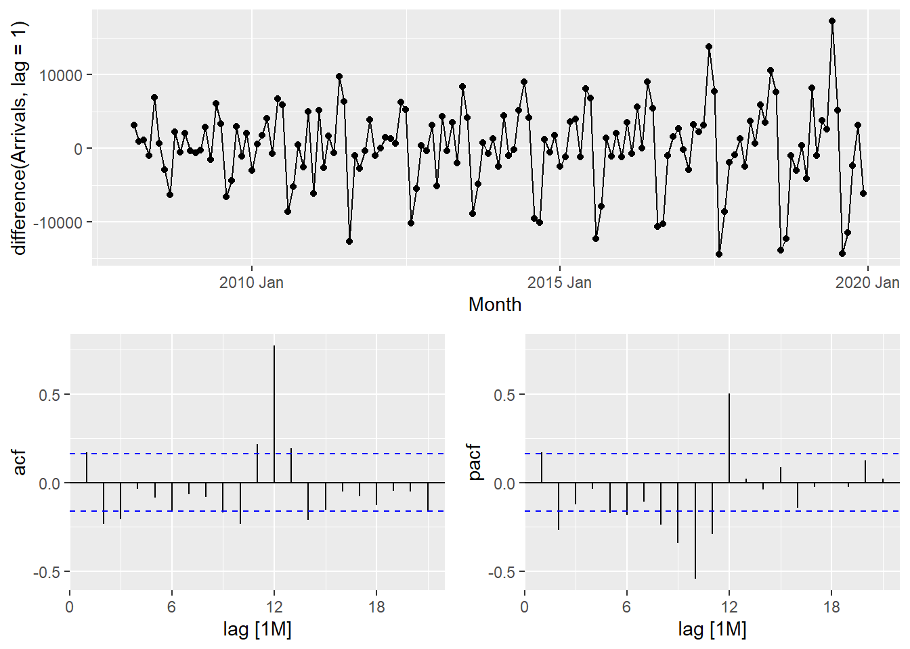
Seasonal differencing
tsibble_longer %>%
filter(Country == "Vietnam") %>%
gg_tsdisplay(difference(
Arrivals,
difference = 12),
plot_type='partial')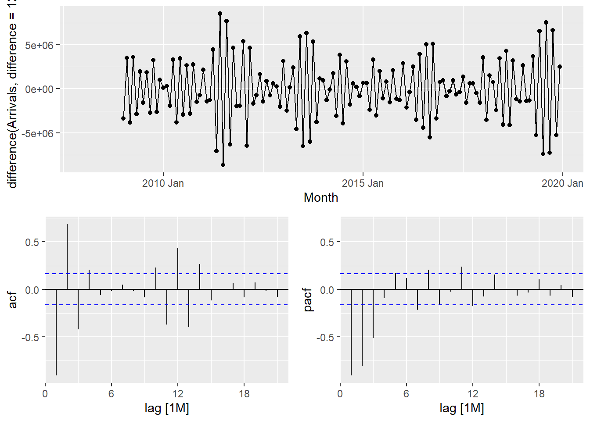
An AR(1) model should have an ACF which decays exponentially, while the PACF is such that the first lag is significant, and subsequent lags are not. A MA(1) model is inverted in the above ACF and PACF features.
Fitting ARIMA models manually: fable methods
We don’t see any of the ACF nor PACF features to have a good guess of the ARIMA parameters, so we will try to fit 2 random models:
- Autoregressive of lag 2, with no differencing (integrative) and no moving average shocks. This is ARIMA(2,0,0)
- The same as above, but added with seasonal autoregressive lags of 2 and seasonal differencing of 1, with no seasonal MA processes. This is ARIMA(2,0,0)(2,1,0).
fit_arima <- vietnam_train %>%
model(
arima200 = ARIMA(Arrivals ~ pdq(2,0,0)),
sarima210 = ARIMA(Arrivals ~ pdq(2,0,0) +
PDQ(2,1,0))
)
report(fit_arima)# A tibble: 2 × 9
Country .model sigma2 log_lik AIC AICc BIC ar_roots ma_roots
<chr> <chr> <dbl> <dbl> <dbl> <dbl> <dbl> <list> <list>
1 Vietnam arima200 4173906. -1085. 2181. 2182. 2198. <cpl [26]> <cpl [0]>
2 Vietnam sarima210 4173906. -1085. 2181. 2182. 2198. <cpl [26]> <cpl [0]>The report() function provides us with details of the fittedmodel.
Fitting ARIMA models automatically: fable methods
fit_autoARIMA <- vietnam_train %>%
model(ARIMA(Arrivals))
report(fit_autoARIMA)Series: Arrivals
Model: ARIMA(2,0,0)(2,1,0)[12] w/ drift
Coefficients:
ar1 ar2 sar1 sar2 constant
0.4748 0.1892 -0.5723 -0.1578 1443.2068
s.e. 0.0924 0.0903 0.0989 0.1032 188.9468
sigma^2 estimated as 4173906: log likelihood=-1084.6
AIC=2181.19 AICc=2181.94 BIC=2197.92Model Comparisons
bind_rows(
fit_autoARIMA %>% accuracy(),
fit_autoETS %>% accuracy(),
fit_autoARIMA %>%
forecast(h = 12) %>%
accuracy(vietnam_ts),
fit_autoETS %>%
forecast(h = 12) %>%
accuracy(vietnam_ts)) %>%
select(-ME, -MPE, -ACF1)# A tibble: 4 × 8
Country .model .type RMSE MAE MAPE MASE RMSSE
<chr> <chr> <chr> <dbl> <dbl> <dbl> <dbl> <dbl>
1 Vietnam ARIMA(Arrivals) Training 1907. 1458. 5.37 0.491 0.517
2 Vietnam ETS(Arrivals) Training 1745. 1386. 5.29 0.467 0.473
3 Vietnam ARIMA(Arrivals) Test 2647. 2136. 5.17 0.720 0.717
4 Vietnam ETS(Arrivals) Test 3163. 2636. 6.64 0.889 0.857Forecasting Multiple Time Series
Here we will perform time series forecasting on multiple time series at one go. For the purpose of the exercise, visitor arrivals from five selected ASEAN countries will be used.
First, filter() is used to extract the selected countries’ data.
ASEAN <- tsibble_longer %>%
filter(Country == "Vietnam" |
Country == "Malaysia" |
Country == "Indonesia" |
Country == "Thailand" |
Country == "Philippines")Next, mutate() is used to create a new field named Type to split the data into Training and Hold-out samples. Lastly, filter() is used to extract the training data set and save it as a tsibble object called ASEAN_train.
ASEAN_train <- ASEAN %>%
mutate(Type = if_else(
`Month-Year` >= "2019-01-01",
"Hold-out", "Training")) %>%
filter(Type == "Training")Fitting Mulltiple Time Series
We autofit both ETS and ARIMA models using model().
ASEAN_fit <- ASEAN_train %>%
model(
ets = ETS(Arrivals),
arima = ARIMA(Arrivals)
)Examining Models
The glance() function of fabletools provides a one-row summary of each model, and commonly includes descriptions of the model’s fit such as the residual variance and information criteria.
ASEAN_fit %>%
glance()# A tibble: 10 × 12
Country .model sigma2 log_lik AIC AICc BIC MSE AMSE MAE
<chr> <chr> <dbl> <dbl> <dbl> <dbl> <dbl> <dbl> <dbl> <dbl>
1 Indonesia ets 1.02e-2 -1561. 3156. 3161. 3205. 1.74e8 1.80e8 0.0732
2 Indonesia arima 1.48e+8 -1290. 2589. 2590. 2603. NA NA NA
3 Malaysia ets 4.67e-3 -1430. 2894. 2899. 2943. 2.04e7 2.00e7 0.0506
4 Malaysia arima 2.62e+7 -1185. 2378. 2379. 2390. NA NA NA
5 Philippines ets 3.56e-3 -1343. 2722. 2728. 2774. 5.28e6 7.58e6 0.0461
6 Philippines arima 8.04e+6 -1122. 2260. 2262. 2283. NA NA NA
7 Thailand ets 6.63e-3 -1343. 2722. 2728. 2774. 5.40e6 6.33e6 0.0584
8 Thailand arima 8.51e+6 -1127. 2269. 2270. 2288. NA NA NA
9 Vietnam ets 4.55e-3 -1300. 2635. 2640. 2684. 3.05e6 3.42e6 0.0520
10 Vietnam arima 4.17e+6 -1085. 2181. 2182. 2198. NA NA NA
# ℹ 2 more variables: ar_roots <list>, ma_roots <list>Be wary though, as information criteria (AIC, AICc, BIC) are only comparable between the same model class and only if those models share the same response (after transformations and differencing).
Extracintg fitted and residual values
The fitted values and residuals from a model can obtained using the fitted() and residuals() functions respectively. A more comprehensive picture is provided by the augment() function, which provides the original data along with both fitted values and their residuals.
ASEAN_fit %>%
augment()# A tsibble: 1,320 x 7 [1M]
# Key: Country, .model [10]
Country .model Month Arrivals .fitted .resid .innov
<chr> <chr> <mth> <dbl> <dbl> <dbl> <dbl>
1 Indonesia ets 2008 Jan 62683 56534. 6149. 0.109
2 Indonesia ets 2008 Feb 47834 46417. 1417. 0.0305
3 Indonesia ets 2008 Mar 64688 62660. 2028. 0.0324
4 Indonesia ets 2008 Apr 58074 61045. -2971. -0.0487
5 Indonesia ets 2008 May 57089 62280. -5191. -0.0833
6 Indonesia ets 2008 Jun 70118 75791. -5673. -0.0749
7 Indonesia ets 2008 Jul 73805 78691. -4886. -0.0621
8 Indonesia ets 2008 Aug 58015 61910. -3895. -0.0629
9 Indonesia ets 2008 Sep 63730 74518. -10788. -0.145
10 Indonesia ets 2008 Oct 71206 67869. 3337. 0.0492
# ℹ 1,310 more rowsComparing Fit Models
accuracy() is used to compare the performances of the models.
ASEAN_fit %>%
accuracy() %>%
arrange(Country)# A tibble: 10 × 11
Country .model .type ME RMSE MAE MPE MAPE MASE RMSSE ACF1
<chr> <chr> <chr> <dbl> <dbl> <dbl> <dbl> <dbl> <dbl> <dbl> <dbl>
1 Indonesia ets Trai… -1.81e3 13187. 9665. -1.83 7.57 0.556 0.619 -0.236
2 Indonesia arima Trai… -9.54e1 11351. 8382. -0.136 6.38 0.482 0.533 -0.00802
3 Malaysia ets Trai… -6.78e2 4515. 3538. -1.25 5.15 0.529 0.527 -0.288
4 Malaysia arima Trai… -2.33e1 4801. 3684. -0.109 5.20 0.551 0.561 -0.00933
5 Philippi… ets Trai… -2.35e0 2298. 1897. -0.334 4.64 0.464 0.408 0.0400
6 Philippi… arima Trai… 9.53e0 2624. 1934. -0.269 4.60 0.473 0.466 0.00717
7 Thailand ets Trai… 1.97e1 2323. 1773. -0.511 5.89 0.489 0.485 -0.0812
8 Thailand arima Trai… 5.88e1 2710. 1932. -0.562 6.16 0.532 0.565 -0.0112
9 Vietnam ets Trai… -3.52e1 1745. 1386. -0.728 5.29 0.467 0.473 0.279
10 Vietnam arima Trai… 1.95e0 1907. 1458. -0.671 5.37 0.491 0.517 0.0136 Forecast Future Values
Forecasts from these models can be produced directly as our specified models do not require any additional data.
ASEAN_fc <- ASEAN_fit %>%
forecast(h = "12 months")Visualising the forecasted values
autoplot() of feasts package is used to plot the raw and fitted values.
ASEAN_fc %>%
autoplot(ASEAN)
There is varied performance by both ETS and ARIMA models across different countries data. A good compromise would be to combine predictions from both models for better forecasts.
Reference
Rob J Hyndman and George Athanasopoulos (2022) Forecasting: Principles and Practice (3rd ed), online version.